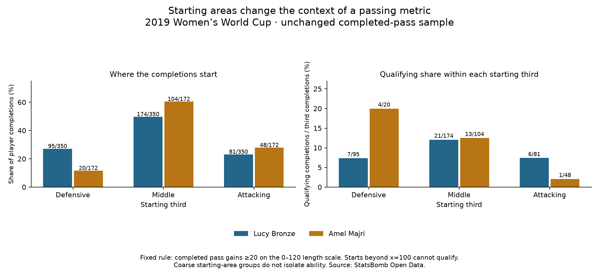

Football analyst training · Recruitment phase · Lesson 67
Where did the pass start?
Read: Soccermatics Lesson 3 — Statistical scouting → Context: what to measure.
Our rule needs at least 20 units of forward gain. A player already near the attacking goal has less pitch left.
Start x=110 → furthest possible end x=120 Maximum forward gain = 10 This pass cannot meet the 20-unit rule.
At x=100, a pass ending at x=120 can still qualify. Beyond x=100, it cannot.
The completed assignment
We kept the same 4,158 completions and all previous results. Then we grouped each player's completions by starting third.
- Bronze: 20/350 (5.7%) started beyond x=100.
- Majri: 20/172 (11.6%) started beyond x=100.
The same count represents a larger fraction of Majri's activity. These passes can still be valuable, despite being unable to meet our rule.

Compare a more specific group
For completions starting in the middle third, x=40 to below 80:
- Bronze: 21/174 → 12.1% meet the rule.
- Majri: 13/104 → 12.5%.
These broad thirds do not make the full situations equal. We have not adjusted for pressure, opponents, starting side, exact location or realistic passing options. We have not changed the earlier per-90 rates or produced a new ability ranking.
Practice: is a player making a poor decision simply because a pass starts at x=110 and fails our 20-unit rule?
No. The rule is impossible to meet from that starting point. A short pass there could be useful. The metric has a limitation.
Run 67_fullback_starting_area_context.py in Spyder. Read the 35-player context report. Assisted assignment; ask your teacher about any unclear boundary or denominator.